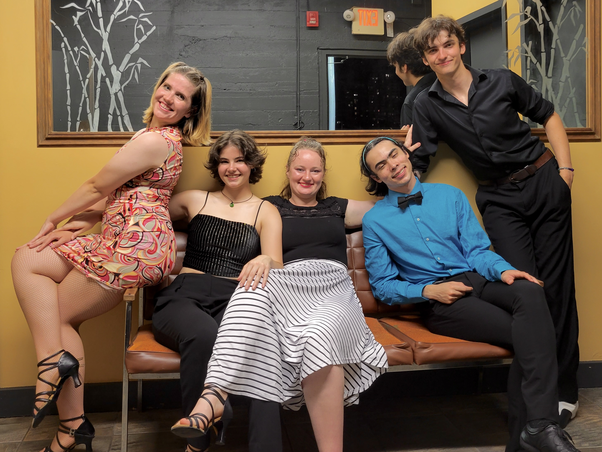

Executive Team
The UVic Ballroom, Latin, and Swing Club is run by a group of volunteer students. They hire professional instructors to teach classes, they plan events and workshops. If you are interested in joining the executive and helping run the club, please talk to one of the executives or email us at ballroom@uvicdance.com!
President - Aria Raszka (she/her)
Vice President - Ixmar Nava (he/him)
Hey friends, I’m Ixmar, a 3rd year psychology student. When I joined this club last semester I had no dance experience, but I have always loved being able to dance and make up moves to whatever song is playing. This club has not only been welcoming but an extraordinary environment to meet new people that all want a bit of fun and dance. Learning so many styles has made these classes some of the days I look forward to the most, whether it’s to spend time with new friends or learn another move to bust out on a whim. Come give it a try! Worse comes to worst, you love it so much you don’t want to stop dancing!
Secretary - Silvan Wood (they/them)
I have always had an intense passion for the creative arts. Growing up, I acted in many school musicals and played trombone in concert and jazz band. I was never interested in P.E. or any kind of physical activity, but my interest in jazz led me towards swing dancing classes in my first year at UVic. As fun as swing was, I found myself entirely captivated by salsa and latin rhythms, where I found a passion for learning how movement connects with my partner and the music. Joining this welcoming community has allowed me to participate in many amazing opportunities like travelling internationally to perform, social dancing to live music by the top salsa bands, taking as many hours of dance class as I can fit in each week, and constantly making new friends. I hope to see you on the dance floor!
Grand Member at Large - Alex Thornewell (they/them)
Hi everyone, I’m Alex, a fourth year Electrical Engineering student. This is my third semester with the club and my first on the executive team. I only had marginal dance experience before joining the club although lots of experience in sports. With dance, I have improved my physical coordination and confidence. I felt safe and welcomed by the club and the executive team when I first started dancing. On my first day of free classes with the club when everything was online I loved it so much that I immediately bought the membership.
Grand Member at Large - Athaliah Henriquez (she/her)

Hello! I’m Athaliah, I’m a 3rd year Psychology and Computer Science major. I started Salsa last June with no prior dance experience and loved it. I then went on to join the club this semester having already known some of the members. As someone who hadn’t tried dancing before, trying salsa was a great first exposure. If you also feel like trying something completely new and out of your element, give it a go and swing by a class. I’m excited to meet you all!
Social Media Manager - vacant

Email ballroom@uvicdance.com if you are interested in this position.
Finance - vacant
Email ballroom@uvicdance.com if you are interested in this position.
Grand Members at Large - vacant
We are always looking for more folks to join as Grand Members at Large!
Email ballroom@uvicdance.com if you are interested in this position.
Hi:) I'm Aria and I'm a biology and psychology student. This will be my second year on the exec team and I am super excited to be your President! When I first joined the UVBLSC, I had almost no dance experience. Despite fully believing I had two left feet, I immediately fell in love with swing dancing (and was proved wrong). After a semester of taking swing, I finally had the courage to try out the latin dance classes and now I'm taking pretty much every possible opportunity to dance! The club has given me many cool opportunities from learning to dance, preforming on stage and making amazing friends. Even if you think you don't like dancing or that you wouldn't be good at it, I'd encourage you to give the UVBLSC a try, you might be surprised!